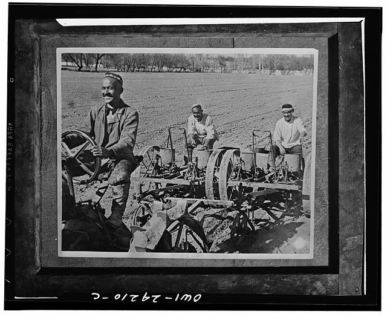

Kollektivlashtirish va "quloqlashtirish": 1929–1934-yillarda o'zbek dehqonlarining majburiy ko'chirilishi
1929-yildan boshlangan sovet kollektivlashtirishi va "quloqlashtirish" (kulaklarni sinf sifatida tugatish) siyosati O'zbekiston SSRda yer-mulkni musodara qilish, oilalarni surgun qilish va chegaraga tomon qochishga olib keldi. Ushbu tarixiy maqola jarayonning asosiy sanalari, siyosatlari va oqibatlarini manbalarga asoslangan holda bayon etadi; munozarali raqamlar alohida belgilab o'tiladi.

1920-yillarning oxiri — 1930-yillarning boshlarida Sovet Ittifoqi qishloq xo'jaligini majburan kollektivlashtirish (yakka xo'jaliklarni kolxoz va sovxozlarga birlashtirish) siyosatini amalga oshirdi. Bu siyosatning ajralmas qismi — "quloqlashtirish", ya'ni badavlat dehqonlar va yer egalarini "sinf sifatida tugatish" edi. O'zbekiston SSRda bu jarayon yer-mulkni musodara qilish, minglab oilalarni surgun qilish va bir qism aholining chet elga — jumladan Afg'onistonga — qochishi bilan kechdi. Quyida jarayon faqat tasdiqlangan sanalar va manbalar asosida bayon etiladi.
Oldingi bosqich: yer-suv islohoti
Kollektivlashtirishga zamin O'zbekiston SSRda 1925-yilda boshlangan yer-suv islohoti ("yer-suv islohoti") bilan tayyorlangan. 1925–1929-yillarda bosqichma-bosqich o'tkazilgan bu islohot yirik yer egalarining yer va suvdan foydalanish huquqini davlat ixtiyoriga olib, kambag'al dehqonlarga qayta taqsimladi. Tadqiqotchilar bu islohotni keyingi quloqlashtirishning dastlabki bosqichi deb baholaydilar. (Manba: Revolutionary Russia jurnali, Taylor & Francis.)
Asosiy sanalar (1929–1933)
1929-yil 27-dekabrda Stalin "kulaklarni sinf sifatida tugatish" (likvidatsiya kulachestva kak klassa) siyosatini oshkora e'lon qildi. 1929-yil dekabrida Akmal Ikromov O'zbekiston Kommunistik partiyasining birinchi kotibi bo'ldi (1937-yil sentabrigacha). 1930-yil 5-yanvarda Markaziy Qo'mitaning "Kollektivlashtirish sur'ati va kolxoz qurilishiga davlat yordami to'g'risida"gi qarori chiqdi. 1930-yil 30-yanvardagi Siyosiy byuro qarori quloqlarni uch toifaga ajratib, surgun kvotalarini belgiladi; 1930-yil 2-fevralda OGPU (davlat xavfsizlik idorasi) buyrug'i bilan hibsga olish va ko'chirish amaliyoti yo'lga qo'yildi. 1933-yil 8-mayda Stalin va Molotov imzolagan maxfiy ko'rsatma ommaviy surgunlarni to'xtatdi. (Manbalar: Communist Crimes; Rights in Russia; Dekulakization.)

"Quloq", "boy" va uch toifa
Sovet "kulak" (quloq) tamg'asi mahalliy sharoitda ko'pincha "boy" — yirik yer egasiga, shuningdek diniy arboblar va vaqf yeriga aloqadorlarga nisbatan qo'llanildi; toifa siyosiy va noaniq tarzda belgilanardi. 1930-yil 30-yanvar qarori quloqlarni uch toifaga ajratdi: birinchi toifa ("aksilinqilobiy faollar") — hibs, lager yoki qatl; ikkinchi toifa (eng badavlatlari) — oilasi bilan uzoq hududlarga surgun; uchinchi toifa — mol-mulkining bir qismi musodara qilinib, o'z tumani ichida ko'chirish. Surgun qilinganlar "maxsus ko'chirilganlar" (spetspereselentsy) deb atalib, Shimol o'lkasi, Ural, Sibir va Qozog'istonga jo'natildi.
Raqamlar (munozarali)
Surgun miqyosiga oid raqamlar manbalarda sezilarli farq qiladi va baholar sifatida qabul qilinishi kerak. Butun Ittifoq bo'yicha 1930-yil 30-yanvar qarori birinchi toifa uchun qariyb 60 000 kishi, ikkinchi toifa uchun esa qariyb 150 000 oila kvotasini belgilagan — bular Ittifoq miqyosidagi kvotalar, O'zbekistonga tegishli raqamlar emas. Umumiy hisobda 1930–1933-yillarda butun Ittifoq bo'ylab 2,1–2,3 million kishi quloq deb surgun qilingani, tarixchi Manfred Hildermeier bahosiga ko'ra esa surgun jarayonida 530 000–600 000 kishi halok bo'lgani keltiriladi (bular munozarali baholar). O'zbekiston SSRga xos aniq surgun raqamlari manbalarda kam va bir-biriga mos kelmaydi; shu bois ularni ehtiyotkorlik bilan, baho sifatida qabul qilish lozim. (Manbalar: Dekulakization; Communist Crimes; Population transfer in the Soviet Union.)
Paxta yakkahokimligi
Kollektivlashtirish O'zbekiston SSRda paxta yakkahokimligini (monokultura) mustahkamladi: sug'oriladigan yerlar deyarli butunlay paxta yetishtirishga yo'naltirildi. Respublika Sovet Ittifoqida yetishtirilgan paxtaning taxminan 70 foizini ta'minlardi. Bu bog'liqlik keyinchalik Orol dengizining qurib borishiga olib kelgan uzoq muddatli ekologik yo'lning asosiy omillaridan biri bo'ldi.
Oqibatlar: majburiy o'troqlashtirish va qochqinlik
Kollektivlashtirish bilan birga ko'chmanchi va yarim ko'chmanchi chorvadorlarni majburan o'troqlashtirish ham amalga oshirildi; bu an'anaviy chorvachilik xo'jaligini izdan chiqardi. Qo'shni Qozog'istonda bu siyosat 1931–1933-yillarda og'ir ocharchilikka sabab bo'ldi va qochqinlar O'zbekiston hamda boshqa respublikalarga oqib keldi. Shuni ta'kidlash kerakki, ocharchilikdan ko'rilgan eng og'ir aholi yo'qotishi O'zbekiston SSRda emas, balki asosan Qozog'istonda yuz bergan. O'zbekistonda esa talon-taroj, mol-mulk musodarasi va turmush darajasining keskin pasayishi kuzatildi.
Afg'onistonga qochish va Basmachilik
Majburiy kollektivlashtirish bir qism dehqonlarni chet elga — ayniqsa janubiy chegaradan Afg'onistonga — qochishga undadi; u yerda 1920-yillardayoq o'n minglab markaziy osiyolik muhojirlar jamoasi shakllangan edi. Bu davr Afg'oniston hududidan O'zbekiston va Tojikistonga reydlar uyushtirgan basmachilik yo'lboshchisi Ibrohimbek harakati bilan ham bog'liq (u 1931-yilda qo'lga olingan). Kollektivlashtirish qarshilik to'lqinini qaytadan kuchaytirgan omillardan biri bo'ldi.
Xulosa
1929–1934-yillardagi kollektivlashtirish va quloqlashtirish O'zbekiston SSR qishlog'ini tubdan o'zgartirdi: yakka xo'jaliklar kolxozlarga birlashtirildi, badavlat dehqonlar va diniy arboblar mol-mulkidan mahrum etilib surgun qilindi, paxta yakkahokimligi mustahkamlandi, bir qism aholi esa chegaradan tashqariga qochdi. Jarayonga oid aniq raqamlar bugungacha munozarali bo'lib qolmoqda — sovet arxiv ma'lumotlari to'liq emas va siyosiy bosim ostida shakllangan; shuning uchun bu maqolada barcha yirik raqamlar baho sifatida, manbasi bilan keltirildi.

Manbalar
- Encyclopaedia Britannica — Dekulakization / Collectivization
- Communist Crimes — Brutal Crime against Rural Life: Collectivisation in the Soviet Union
- Rights in Russia — Remember the Date: Decree on Collectivisation, 5 January 1930
- Revolutionary Russia (Taylor & Francis) — Land-and-water reform in the Uzbek SSR (1924–1928)